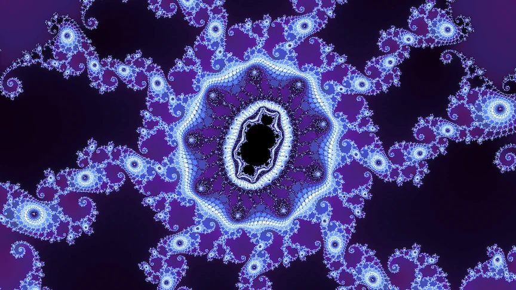
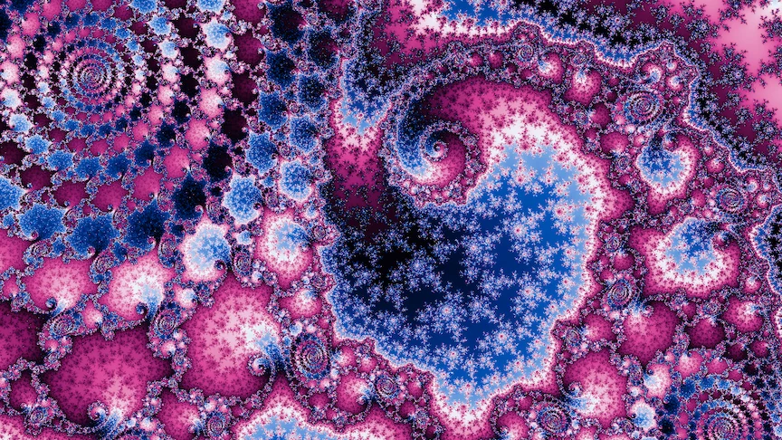
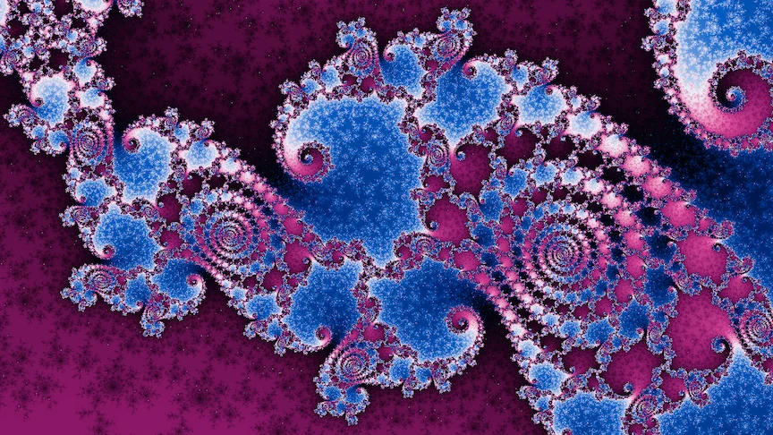

These are zooms drawn with the deep renderer from Deep zoom rendering. Under each video are its midway and final frames. Each one opens in the fractal explorer, so you can carry on exploring from there.
Double descent


Final frame
Seahorse valley


A degree-3 Julia set
Video pendingA deep zoom into a degree-3 Julia set, down to a frame about 10⁻¹⁸ wide.

Midway

Final frame